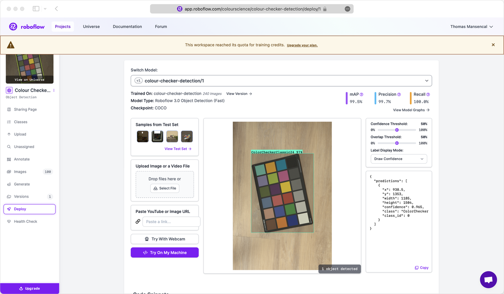
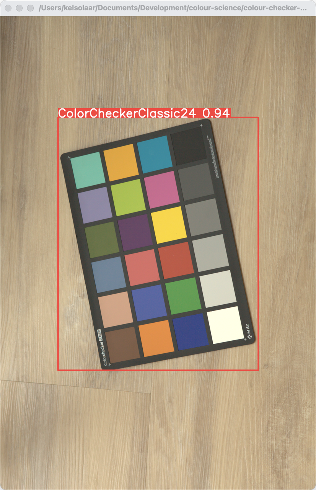
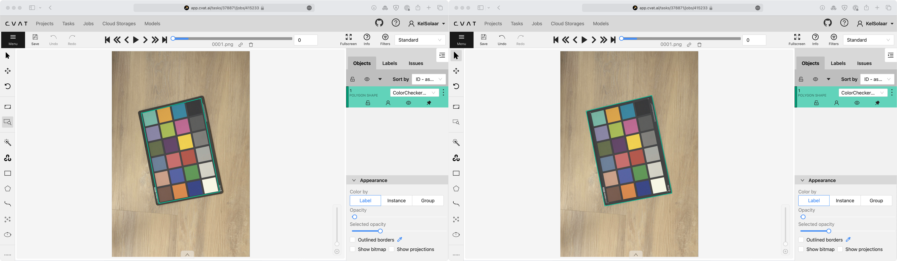
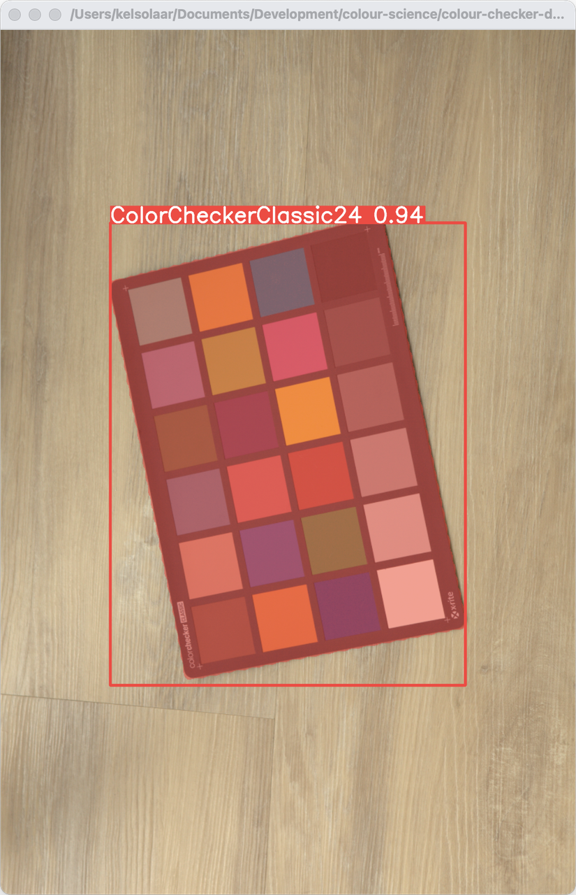
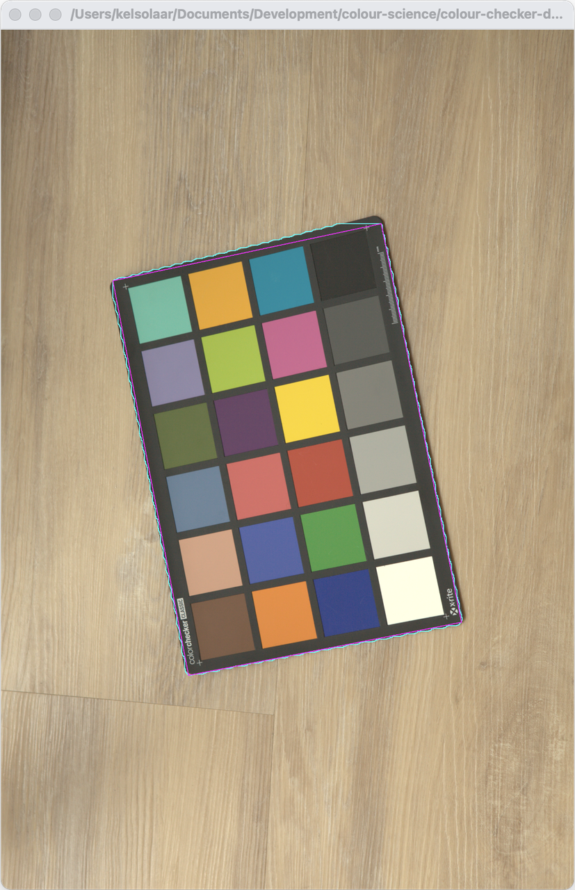
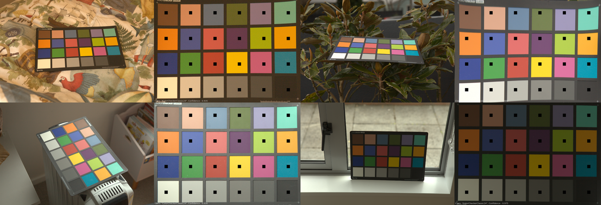

Colour Checker Detection with Machine Learning
We have released a new version of Colour - Checker Detection that implements a new machine learning inference method to detect colour rendition charts, specifically the ColorChecker Classic 24 from X-Rite / Calibrite.
This post describes the journey to produce the model and package it with Colour - Checker Detection.
Proof of Concept
There have been a few requests to support detection of charts that are not parallel to the imaging plane, i.e., with perspective distortion.
Whilst looking at Tim Walter's implementation, and considering the added dependency to sklearn.DBSCAN for more robust clustering, departing from image processing based segmentation and trying machine learning instead seemed appealing.
Imageai and Ultralytics YOLO are popular machine learning object detection models that can trained to detect new object classes.
Dataset
To proof the idea, a series of 100 ColorChecker Classic 24 images was captured
with a Canon 5D Mark II. The original *.CR2 raw images were processed with
dcraw
as follows:
Then, the output *.tiff files were resized to half-resolution and converted
to *.png using Image Magick:
CVAT and Roboflow
The *.png files were uploaded to CVAT. The
ColorChecker Classic 24 were annotated by drawing a bounding box around the
swatches (which will have important consequence later) and the annotations
exported to Microsoft COCO 1.0 format.
Then, the *.png files and COCO 1.0 annotations were uploaded to
Roboflow, and a model was trained with that dataset.

Roboflow resulting model
The inference results were promising! The model can be tested online with a webcam.
Ultralytics YOLO v8
Roboflow is fantastic and everything is made really easy for users but the free credits melted rapidly. Ultimately, more control was required over the entire process.
Using the augmented Roboflow dataset, a YOLO v8 nano detection model was trained locally on a MacBook Pro M1.
# SPDX-License-Identifier: AGPL-3.0 import os from roboflow import Roboflow from ultralytics import YOLO def load_dataset(version=1): roboflow = Roboflow(api_key=os.environ["ROBOFLOW_API_KEY"]) project = roboflow.workspace("colourscience").project("colour-checker-detection") dataset = project.version(version).download("yolov8") # The yaml file is incorrectly formatted and needs to be updated: # test: ../test/images # train: train/images # val: valid/images with open(os.path.join(dataset.location, "data.yaml"), "r") as yaml_file: lines = yaml_file.readlines() for i, line in enumerate(lines): if line.startswith("tests:"): lines[i] = "test: test/images\n" elif line.startswith("train:"): lines[i] = "train: train/images\n" elif line.startswith("val:"): lines[i] = "val: valid/images\n" with open(os.path.join(dataset.location, "data.yaml"), "w") as yaml_file: yaml_file.write("".join(lines)) return dataset def train_model(dataset, model="yolov8n.pt", epochs=100, device="mps", resume=False): model = YOLO(model) return model.train( data=os.path.join(dataset.location, "data.yaml"), epochs=epochs, imgsz=640, device=device, resume=resume, ) def validate(model): metrics = model.val() print(metrics.box.map) print(metrics.box.map50) print(metrics.box.map75) print(metrics.box.maps) def predict(model, image): return model(image)
The predictions were really good and this model served as the basis to develop the new inference method.
Development
The only real mistake is the one from which we learn nothing.
—Henry Ford
Going in Circles
An issue that quickly surfaced is that whilst the prediction returned a bounding box for the ColorChecker Classic 24 swatches, it was not oriented.

Detected ColorChecker Classic 24 with non-oriented bounding box.
Correcting the perspective distortion of the swatches within the bounding box involved segmenting the region-of-interest, finding the principal lines using Hough Line Transform, partitioning them by angle using K-means clustering, etc.
Development stalled and reached a point where the new approach was becoming complex, required fine-tuned numbers for segmentation. Ultimately, the objective was to depart from image processing based segmentation and the current development state was heading right back to it!
Taking a Step Back
After pausing for a few days, the solution came. In a hindsight it was obvious: Using a YOLO v8 segmentation model instead of the detection one.
Indeed, the result contour can be simplified to a quadrilateral and perspective warped to an appropriate target rectangle.
As the original annotation bounding boxes were made around the swatches, the newly trained nano segmentation model was not working properly, cutting the swatches at times.
The annotations were redone, and, this time, polygons were drawn around the entire ColorChecker Classic 24.

Annotating in CVAT, see the turquoise bounding box on the ColorChecker Classic 24.
Dataset Conversion
The next issue was converting the CVAT annotations to a format appropriate to YOLO v8. Unfortunately, the CVAT export to YOLO v8 format only supports bounding boxes and not polygons. A conversion script, available on Google Colab, was written to convert the dataset, it uses two Ultralytics conversion definitions:
# SPDX-License-Identifier: AGPL-3.0 import json import numpy as np import random import shutil import warnings from pathlib import Path ROOT_DATASET_SOURCE = Path( "/content/drive/MyDrive/Documents/Development/colour-science/Private/Color-Checker-Detection-Dataset-COCO" ) ROOT_DATASET_TARGET = Path( "/content/drive/MyDrive/Documents/Development/colour-science/Private/Color-Checker-Detection-Dataset-YOLO" ) TEMPLATE_DATA_YAML = """ names: {categories} nc: {category_count} test: ./test/images train: ./train/images val: ./valid/images """.strip() PARTITIONS = { "train": 70, "valid": 15, "test": 15, } # https://github.com/ultralytics/JSON2YOLO/blob/master/general_json2yolo.py def min_index(arr1, arr2): dis = ((arr1[:, None, :] - arr2[None, :, :]) ** 2).sum(-1) return np.unravel_index(np.argmin(dis, axis=None), dis.shape) def merge_multi_segment(segments): merged = [] segments = [np.array(i).reshape(-1, 2) for i in segments] idx_list = [[] for _ in range(len(segments))] for i in range(1, len(segments)): idx1, idx2 = min_index(segments[i - 1], segments[i]) idx_list[i - 1].append(idx1) idx_list[i].append(idx2) for k in range(2): if k == 0: for i, idx in enumerate(idx_list): if len(idx) == 2 and idx[0] > idx[1]: idx = idx[::-1] segments[i] = segments[i][::-1, :] segments[i] = np.roll(segments[i], -idx[0], axis=0) segments[i] = np.concatenate([segments[i], segments[i][:1]]) if i in [0, len(idx_list) - 1]: merged.append(segments[i]) else: idx = [0, idx[1] - idx[0]] merged.append(segments[i][idx[0] : idx[1] + 1]) else: for i in range(len(idx_list) - 1, -1, -1): if i not in [0, len(idx_list) - 1]: idx = idx_list[i] nidx = abs(idx[1] - idx[0]) merged.append(segments[i][nidx:]) return merged def annotation_data_from_image(image_name, annotations): for data in annotations["images"]: if image_name != data["file_name"]: continue for annotation in annotations["annotations"]: if annotation["image_id"] != data["id"]: continue return annotation, data return None, None def convert_COCO_segmentation_to_YOLO( source_dataset=ROOT_DATASET_SOURCE, target_dataset=ROOT_DATASET_TARGET, partitions=PARTITIONS, template_data_yaml=TEMPLATE_DATA_YAML, ): with open(source_dataset / "instances_default.json") as json_file: annotations = json.load(json_file) image_paths = list(source_dataset.glob("*.png")) image_count = len(image_paths) random.shuffle(image_paths) for partition, count in partitions.items(): images_directory = target_dataset / partition / "images" labels_directory = target_dataset / partition / "labels" images_directory.mkdir(parents=True) labels_directory.mkdir(parents=True) count *= int(image_count / 100) partitioned_paths, image_paths = image_paths[:count], image_paths[count:] for image_path in partitioned_paths: annotation, data = annotation_data_from_image(image_path.name, annotations) if not all([annotation, data]): warnings.warn(f'No annotation data was found for "{image_path}" image!') continue category = annotation["category_id"] - 1 width = data["width"] height = data["height"] if len(annotation["segmentation"]) > 1: segments = merge_multi_segment(annotation["segmentation"]) segments = ( (np.concatenate(segments, axis=0) / np.array([width, height])) .reshape(-1) .tolist() ) else: segments = [j for i in annotation["segmentation"] for j in i] segments = ( (np.array(segments).reshape(-1, 2) / np.array([width, height])) .reshape(-1) .tolist() ) segments = [category] + segments with open(labels_directory / f"{image_path.stem}.txt", "a") as label_file: label_file.write( (("%g " * len(segments)).rstrip()) % tuple(segments) + "\n" ) shutil.copyfile(image_path, images_directory / image_path.name) with open(ROOT_DATASET_TARGET / "data.yml", "w") as yaml_file: categories = [category["name"] for category in annotations["categories"]] yaml_content = template_data_yaml.format( categories="\n".join([f"- {category}" for category in categories]), category_count=len(categories), ) yaml_file.write(yaml_content) if ROOT_DATASET_TARGET.exists(): shutil.rmtree(ROOT_DATASET_TARGET) ROOT_DATASET_TARGET.mkdir() convert_COCO_segmentation_to_YOLO()
Model Training
A new YOLO v8 nano model was trained, originally at a width of 640 pixels but because the prediction were sometimes imprecise, it was re-trained at a larger 1280 pixels width and using a YOLO v8 large segmentation model as a baseline. As hinted by the previous snippet, and, because the MacBook Pro M1 started to suffer, the training was moved to Google Colab and an A100 GPU.
# SPDX-License-Identifier: AGPL-3.0 # !pip install ultralytics # !git clone https://huggingface.co/datasets/colour-science/colour-checker-detection-dataset/ import os os.chdir("/content/colour-checker-detection-dataset") from ultralytics import YOLO def train_model(dataset, model="yolov8n.pt", epochs=100, device="mps", **kwargs): model = YOLO(model) return model.train(data=dataset, epochs=epochs, device=device, **kwargs) def validate(model): metrics = model.val() print(metrics.box.map) print(metrics.box.map50) print(metrics.box.map75) print(metrics.box.maps) results = train_model( os.path.join(os.getcwd(), "data.yml"), "yolov8l-seg.pt", epochs=600, imgsz=1280, device=0, hsv_h=0.05, hsv_s=0.5, hsv_v=0.25, degrees=22.5, translate=0.1, scale=0.25, shear=11.25, flipud=0.25, fliplr=0.25, mosaic=0, ) print(results) model = YOLO("runs/segment/train/weights/best.pt") validate(model)
Less than 600 Epochs and 1h30 were needed for training with a resulting mAP50 and mAP50-95 metric values of 0.995 and 0.992, respectively.

Segmentation output of the colour-checker-detection-l-seg.pt model.

Segmentation contour and its approximation.
colour-checker-detection-l-seg.pt model is published under the
CC-BY-4.0 license terms on Hugging Face.Packaging the Model
Following Colour, Colour - Checker Detection is freely available under the BSD-3-Clause terms. However, Ultralytics YOLO is distributed under the GNU Affero General Public License v3.0 terms which is incompatible.
To accommodate this incompatibility, a separate script, i.e.,
colour_checker_detection/scripts/inference.py, was written under the
AGPL-3.0 license and the Colour - Checker Detection definitions access
its inference results via sub-process. The YOLO v8 code is thus never
imported into Colour - Checker Detection except in the separate script.
The model is downloaded by the script from Hugging Face and cached in the
$HOME/.colour-science/colour-checker-detection directory.
Using the Inference Method
The API is similar to the original segmentation method and an example notebook is available in the repository.
COLOUR_CHECKER_IMAGE_PATHS = glob.glob( os.path.join(ROOT_RESOURCES_EXAMPLES, "detection", "*.png") ) for path in COLOUR_CHECKER_IMAGE_PATHS: for colour_checker_data in detect_colour_checkers_inference(path, show=True): pass
It is also possible to pass an np.ndarray instance directly. However, something
to be aware of is that YOLO v8 is using cv2.imread
definition to read images which outputs BGR data. Consistently, it is also
expecting BGR np.ndarray. The data is then converted to RGB before training.
As Colour uses RGB data, the default inferencer definition accounts for it and reverses the data to BGR before passing it to YOLO v8.
The separate script slows the total inference process because of the imports and required IO but it is possible to change the inferencer for a new callable if the AGPL-3.0 license is not a concern:
from ultralytics import YOLO def inferencer_agpl(image, **kwargs): model = YOLO( os.path.join( os.path.expanduser("~"), ".colour-science", "colour-checker-detection", "colour-checker-detection-l-seg.pt", ), ) data = [] # NOTE: YOLOv8 expects "BGR" arrays. if isinstance(image, np.ndarray): image = image[..., ::-1] image = image.astype(np.float32) # `device=0` for CUDA GPU for result in model(image, device="mps"): if result.boxes is None: continue if result.masks is None: continue data_boxes = result.boxes.data data_masks = result.masks.data for i in range(data_boxes.shape[0]): data.append( ( data_boxes[i, 4].cpu().numpy(), data_boxes[i, 5].cpu().numpy(), data_masks[i].data.cpu().numpy(), ) ) return data for path in COLOUR_CHECKER_IMAGE_PATHS: for colour_checker_data in detect_colour_checkers_inference( path, inferencer=inferencer_agpl, show=True ): pass
This should be 5 to 10 times faster!
Results and Conclusion

Some difficult examples for the existing Colour - Checker Detection segmentation method.
We are quite happy with the outcome, the new inference method manages to detect the ColorChecker Classic 24 where the image processing based segmentation method fails.
It is much slower but this can be improved by using the aforementioned callable along with a smaller model at the expense of precision, YOLO v8 serves realtime application after all.
We are planning to expand the dataset and train for different classes such as the ColorChecker Nano and ColorChecker SG or even ColorChecker Mini and ColorChecker Passport which are currently difficult to detect.
Comments
Comments powered by Disqus